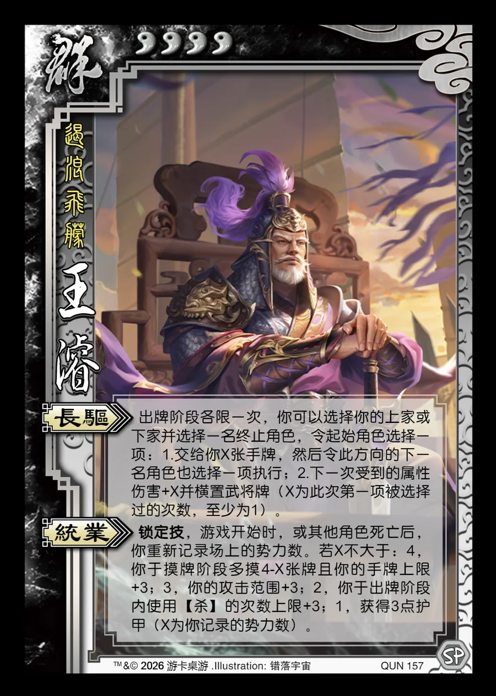

点击卡面查看大图
群
王濬
♥4遏浪飞艨
长驱
出牌阶段各限一次，你可以选择你的上家或下家并选择一名终止角色，令起始角色选择一项：1.交给你X张手牌，然后令此方向的下一名角色也选择一项执行；2.下一次受到的属性伤害+X并横置武将牌（X为此次第一项被选择过的次数，至少为1）。
统业锁定技
锁定技，游戏开始时，或其他角色死亡后，你重新记录场上的势力数。若X不大于：4，你于摸牌阶段多摸4-X张牌且你的手牌上限+3；3，你的攻击范围+3；2，你于出牌阶段内使用【杀】的次数上限+3；1，获得3点护甲（X为你记录的势力数）。